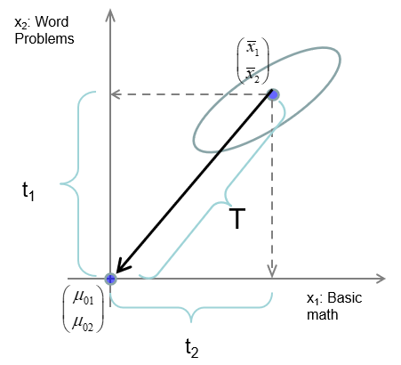

Hotelling’s \(T^2\)
Just as the one- and two- sample univariate \(t\)-test is the gateway drug for understanding analysis of variance, so to Hotelling’s \(T^2\) test provides an entry point to multivariate analysis of variance.
\(T^2\) as a generalized \(t\)-test
Hotelling’s \(T^2\) [@Hotelling:1931] is like the square of a univariate \(t\) statistic. Consider the basic one-sample \(t\)-test, where we wish to test the hypothesis that the mean \(\bar{x}\) of a set of \(N\) measures on a test of basic math, with standard deviation \(s\) does not differ from an assumed mean \(\mu_0 = 150\) for a population. The \(t\) statistic for testing \(H_0 : \mu = \mu_0\) against the two-sided alternative, \(H_0 : \mu \ne \mu_0\) is \[ t = \frac{(\bar{x} - \mu_0)}{s / \sqrt{N}} = \frac{(\bar{x} - \mu_0)\sqrt{N}}{s} \]
Squaring this gives
\[ t^2 = \frac{N (\bar{x} - \mu_0)^2}{s} = N (\bar{x} - \mu_0)(s^2)^{-1} (\bar{x} - \mu_0) \]
Now consider we also have measures on a test of solving word problems for the same sample. Then, a hypothesis test for the means on basic math (BM) and word problems (WP) is the test of the means of these two variables jointly equal their separate values, say, \((150, 100)\).

Hotelling’s \(T^2\) is then the analog of \(t^2\), with the variance-covariance matrix \(\mathbf{S}\) of the scores on (BM, WP) replacing the variance of a single score. This is nothing more than the squared Mahalanobis distance between the sample mean vector \((\bar{x}_{BM}, \bar{x}_{BM})^T\) and the hypothesized means \(\mathbf{\mu}_0\), in the metric of \(\mathbf{S}\), as shown in Figure 1.
\[\begin{align*} T^2 &= N (\bar{\mathbf{x}} - \mathbf{\mu}_0)^T \; \mathbf{S}^{-1} \; (\bar{\mathbf{x}} - \mathbf{\mu}_0) \\ &= N D^2_M (\bar{\mathbf{x}}, \mathbf{\mu}_0) \end{align*}\]
\(T^2\) properties
Aside from it’s elegant geometric interpretation Hotelling’s $T^2 has simple properties that aid in understanding the extension to more complex multivariate tests.
- Maximum \(t^2\) : Consider a linear combination \(w\) of the scores in a matrix \(\mathbf{X} = [ \mathbf{x_1}, \mathbf{x_2}, \dots, \mathbf{x_p}]\) with weights \(\mathbf{a}\),
\[ w = a_1 \mathbf{x_1} + a_2 \mathbf{x_2} + \dots + a_p \mathbf{x_p} = \mathbf{X} \mathbf{a} \] Hotelling’s \(T^2\) is then the maximum value of a univariate \(t^2 (\mathbf{a})\) for all choices of the weights in \(\mathbf{a}\).
Eigenvalue : Hotelling showed that \(T^2\) is the one non-zero eigenvalue (latent root) \(\lambda\) of the matrix \(\mathbf{Q}_H = N (\bar{\mathbf{x}} - \mathbf{\mu}_0)^T (\bar{\mathbf{x}} - \mathbf{\mu}_0)\) relative to \(\mathbf{Q}_E = \mathbf{S}\) that solves the equation \[ (\mathbf{Q}_H - \lambda \mathbf{Q}_E) \mathbf{a} = 0 \]
Eigenvector : The corresponding eigenvector is \(\mathbf{a} = \mathbf{S}^{-1} (\bar{\mathbf{x}} - \mathbf{\mu}_0)\). These are the (raw) discriminant coefficients, giving the relative contribution of each variable to \(T^2\).
Critical values : For a single response, the square of a \(t\) statistic with \(N-1\) degrees of freedom is an \(F (1, N-1)\) statistic. Because we chose \(\mathbf{a}\) to give the maximum \(t^2 (\mathbf{a})\), this can be taken into account with a transformation of \(T^2\) to give a proper \(F\) test, \[ F^* = \frac{N - p}{n (N-1)} T^2 \; \sim \; F (p, N - p) \]
Invariance under linear transformation : Just as a univariate \(t\)-test is unchanged if we apply a linear transformation to the variable, \(x \rightarrow a x + b\), \(T^2\) is invariant under all linear (affine) transformations, \[ \mathbf{x}_{p \times 1} \rightarrow \mathbf{C}_{p \times p} \mathbf{x} + \mathbf{b} \] The same is true for all MANOVA tests.
Two-sample tests : With minor variations in notation, everything above applies to the more usual test of equality of multivariate means in a two sample test of \(H_0 : \mathbf{\mu}_1 = \mathbf{mu}_2\). \[ T^2 = N (\bar{\mathbf{x}}_1 - \bar{\mathbf{x}}_2)^T \; \mathbf{S}_p^{-1} \; (\bar{\mathbf{x}}_1 - \bar{\mathbf{x}}_2_0) \] where \(\mathbf{S}_p\) is the pooled within-sample variance covariance matrix.
Example
The data set mathscore gives scores on a test of basic math skills (BM) and solving word problems (WP) for two groups of \(N=6\) students in an algebra course, each taught by different instructors.
load(here::here("data", "mathscore.RData"))
str(mathscore)
#> 'data.frame': 12 obs. of 3 variables:
#> $ group: Factor w/ 2 levels "1","2": 1 1 1 1 1 1 2 2 2 2 ...
#> $ BM : int 190 170 180 200 150 180 160 190 150 160 ...
#> $ WP : int 90 80 80 120 60 70 120 150 90 130 ...You can carry out the test that the means for both variables are equal using either DescTools::HotellingsT2Test() or car::Anova(),
DescTools::HotellingsT2Test(cbind(BM, WP) ~ group, data=mathscore)
#>
#> Hotelling's two sample T2-test
#>
#> data: cbind(BM, WP) by group
#> T.2 = 29, df1 = 2, df2 = 9, p-value = 1e-04
#> alternative hypothesis: true location difference is not equal to c(0,0)
mod <- lm(cbind(BM, WP) ~ group, data=mathscore)
car::Anova(mod)
#>
#> Type II MANOVA Tests: Pillai test statistic
#> Df test stat approx F num Df den Df Pr(>F)
#> group 1 0.865 28.9 2 9 0.00012 ***
#> ---
#> Signif. codes: 0 '***' 0.001 '**' 0.01 '*' 0.05 '.' 0.1 ' ' 1